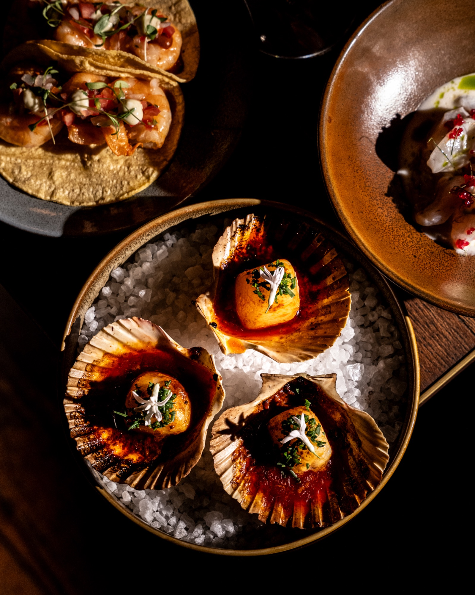
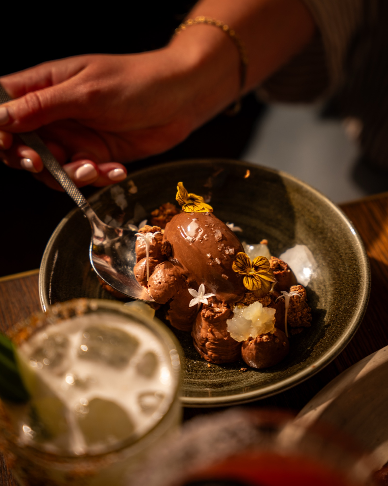
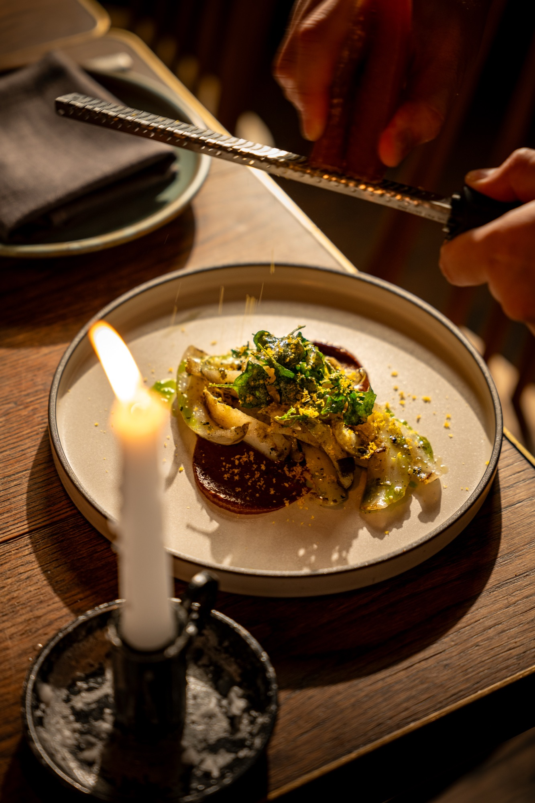
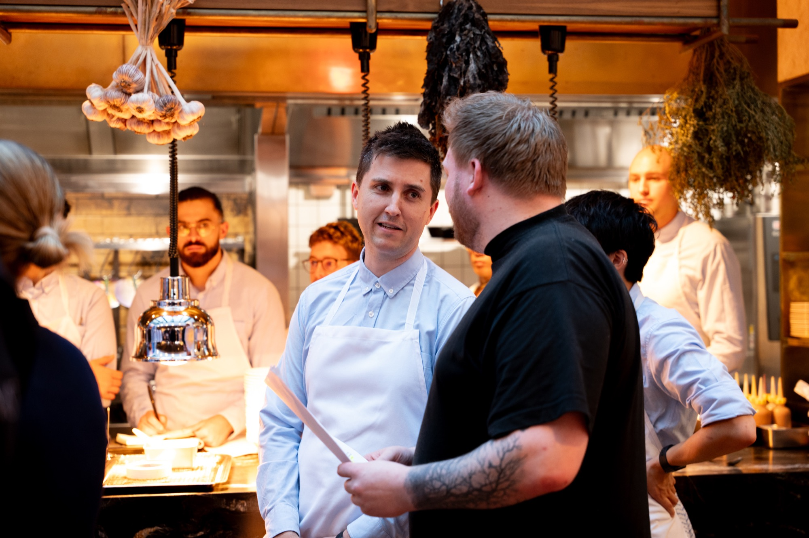

Food & Beverage
Esteban
Full-service digital marketing for Esteban and its sister venues Tequila Mockingbird and Elliott's. Organic, paid, EDMs, creative: all of it.
Project 02 / 07Full-service digital marketing for Esteban and its sister venues Tequila Mockingbird and Elliott's. Organic, paid, EDMs, creative: all of it.
Project 02 / 07Centre House Media runs the full digital marketing operation for Esteban, the Latin-inspired Sydney venue, on an ongoing monthly retainer, alongside its sister venues Tequila Mockingbird and Elliott's under the Atticus Hospitality Group.
Our role spans every channel: organic social, content production, EDM, paid media across Meta and Google, and the always-on creative that keeps each venue front-of-mind for its audience. From event launches and seasonal menus to footy season programming and private dining campaigns, we move from strategy to shoot to publish to performance reporting, all in-house, all on rhythm.
What makes the work distinct is the depth of the relationship. Running three venues with three different personalities (Esteban's Latin warmth, Tequila Mockingbird's playful Mexican energy, Elliott's refined Balmain charm) means we operate as an embedded part of the team rather than an external agency. The creative is sharper because we know each venue inside out, and the performance reflects it.



